Steering Gearbox Removal and Installation
Steering Gearbox Removal and InstallationSpecial Tools Required
^ Ball joint remover, 28 mm 07MAC-SL0A202
^ Engine hanger/adaptor VSB02C000015
^ Front subframe adaptor VSB02C000016
^ 2006 Civic engine hanger VSB02C000025
^ Engine support hanger, A and Reds AAR-T-12566
^ Available through the American Honda Tool and Equipment program, 1-888-4246857.
Removal
Note these items during removal:
^ Use solvent and a brush to wash any oil and dirt off the end of the steering gearbox. Avoid any electrical parts. Blow dry with compressed air.
^ Make sure to remove the steering wheel before disconnecting the steering joint to avoid damaging the cable reel.
1. Make sure you have the anti-theft code for the audio or navigation system, then write down the audio presets.
2. Make sure the ignition switch is OFF, then disconnect the negative cable from the battery.
3. Raise the front of the vehicle, and support it with safety stands in the proper locations.
4. Remove the front wheels.
5. Remove the steering wheel.
6. Remove the driver's dashboard under cover.
7. Remove the steering joint cover (A).
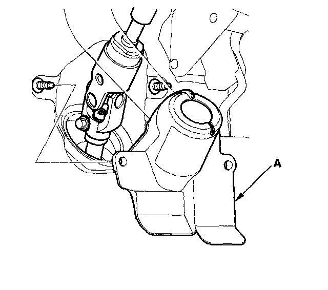
8. Remove the steering joint bolt (A), and disconnect the steering joint by moving the steering joint (B) toward the column. Hold the lower slide shaft (C) on the column with a piece of wire (D) between the joint yoke (E) on the lower slide shaft to the joint yoke on the upper shaft.
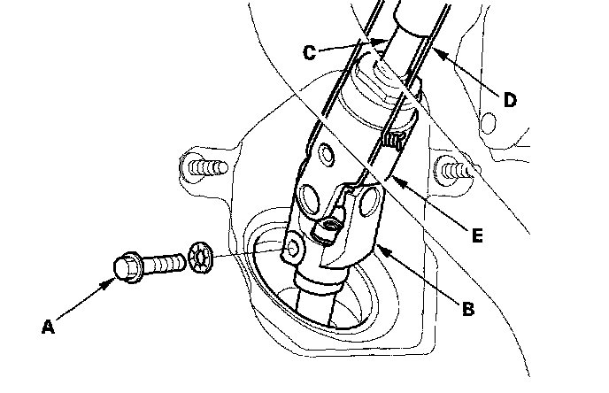
9. Remove the center guide (A) (if equipped), and discard it. The center guide is for factory assembly only.
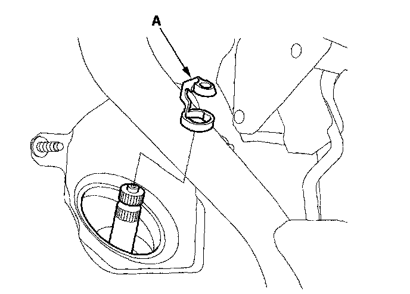
10. Remove the under cowl panel.
11. Remove the air cleaner housing.
12. Attach the engine hanger adapter to the threaded hole in the cylinder head.
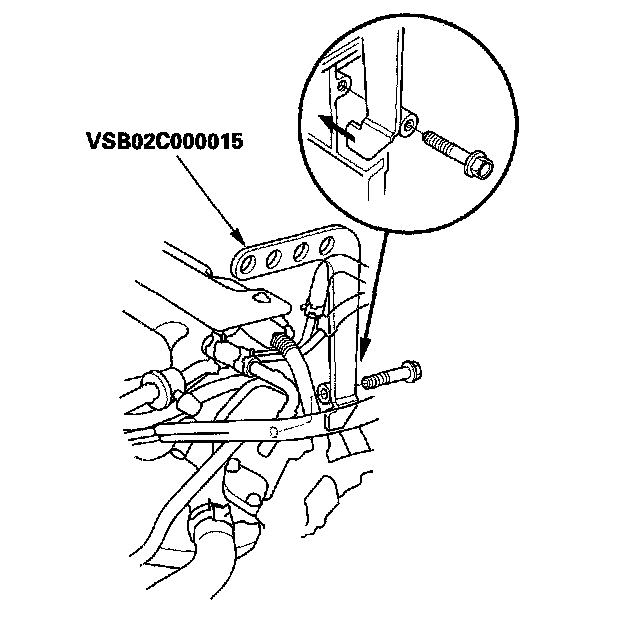
13. Install the front leg assembly (A), hook (B), and wing nut (C) from an A and Reds engine support hanger (AAR-T-12566) onto the engine hanger. Carefully position the engine hanger on the vehicle, and attach the hook to the forward hole in the engine hanger/adapter (D). Tighten the wing nut by hand to lift and support the engine/transmission assembly.
NOTE: Be careful when working around the windshield.
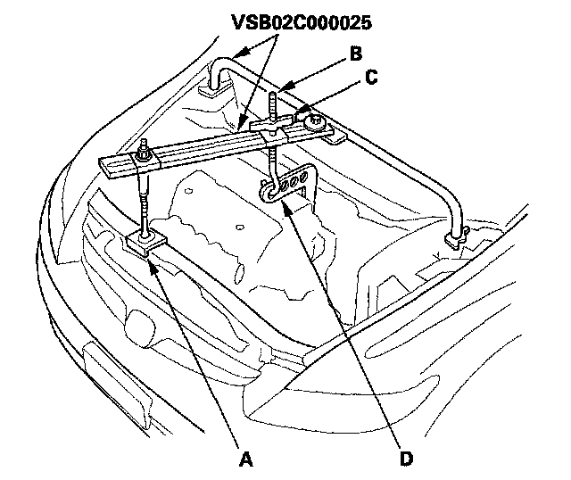
14. Remove the cotter pin (A) from the 12 mm nut (B), and loosen the nut.
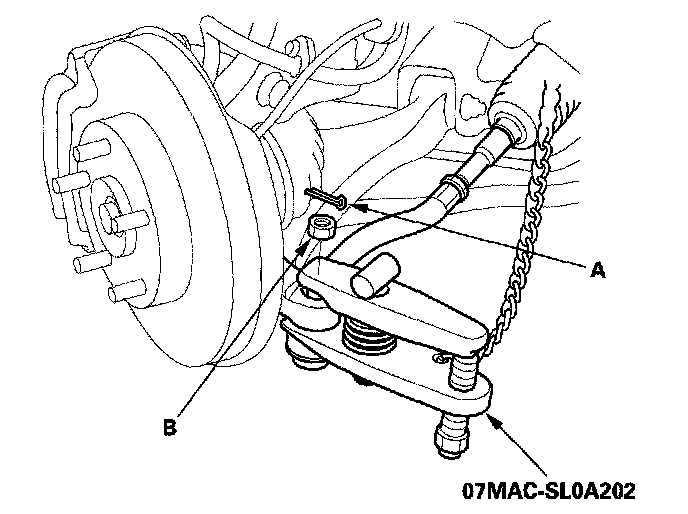
15. Separate the tie-rod ball joint and the knuckle using the ball joint remover.
16. Remove the front splash shield.
17. Disconnect the torque sensor 4P connector (A), motor angle sensor 6P connector (B), motor 1P connector (C), and motor 2P connector (D) from the right side of the steering gearbox. Wrap the connectors with vinyl tape to avoid contamination from grease or water.
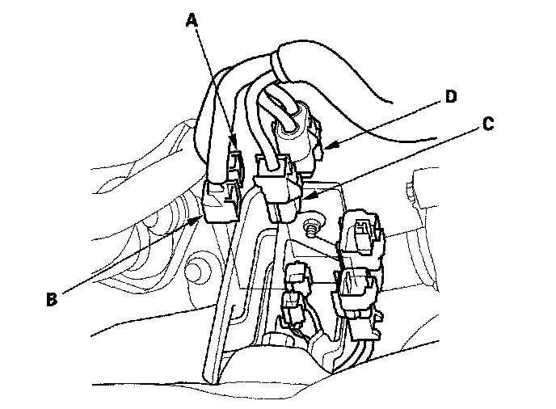
18. Remove the lower ball joint mounting bolt (A) and the flange nuts (B) from the lower arm.
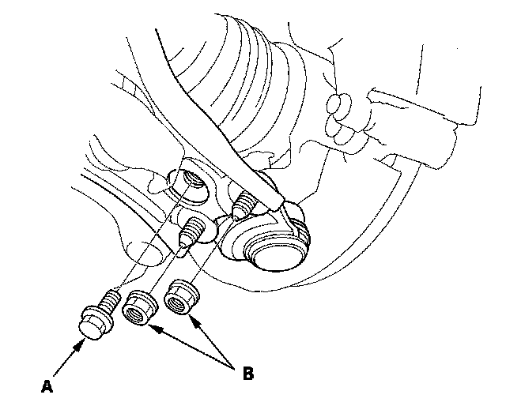
19. Disconnect the lower arm from the lower ball housing.
20. Remove the exhaust hanger (A) from the three way catalytic converter (TWC) (B).
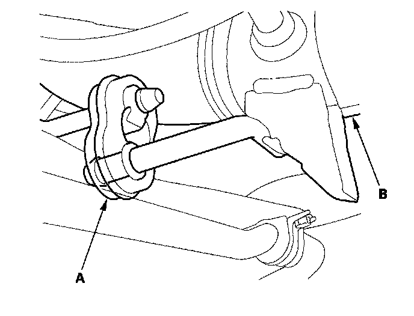
21. Note the reference marks (A) on both sides of the subframe that line up with the body (B).
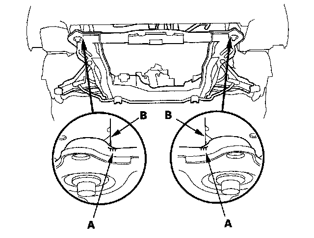
22. Attach the front subframe adaptor (A) to the front subframe (B) and the transmission jack (model number LSL-W9371) or the powertrain lift (model number OTC-1585), then tighten the front subframe adaptor screw.
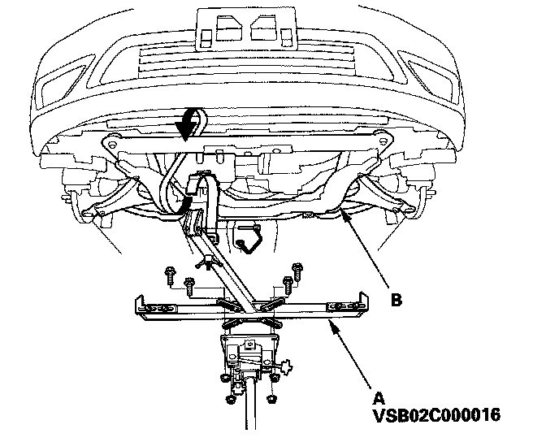
23. Make sure the front subframe is securely supported by the jack with the front subframe adaptor.
24. Remove the front subframe middle mount bolt (A) from the left side.
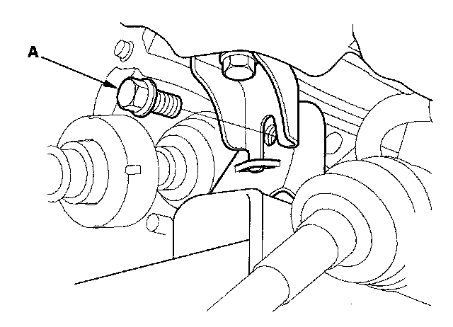
25. Remove the front subframe middle mount bolt (A) from the right side.
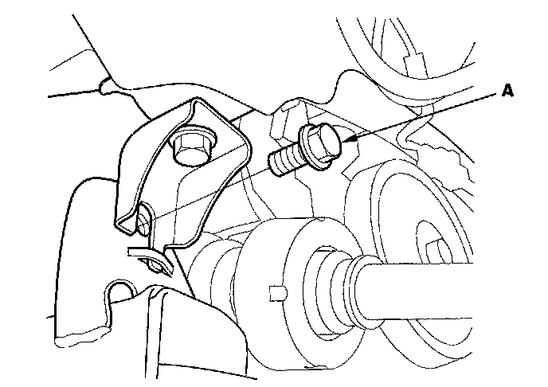
26. Remove the lower torque rod mounting bolt (A) and discard it.
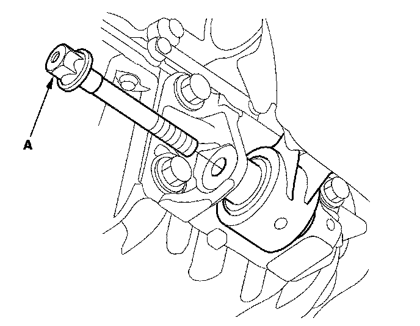
27. Remove the lower radiator hose (A) from the radiator hose stay (B).
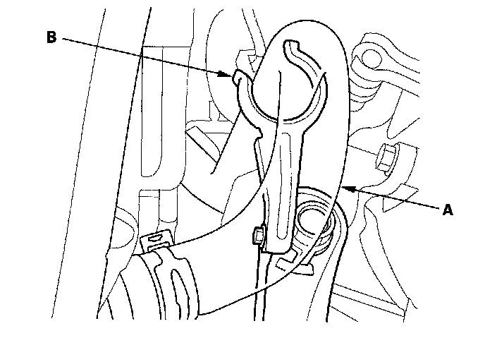
28. Remove the lower engine mounting bolt (A) while holding the nut (B) with a wrench and discard it.
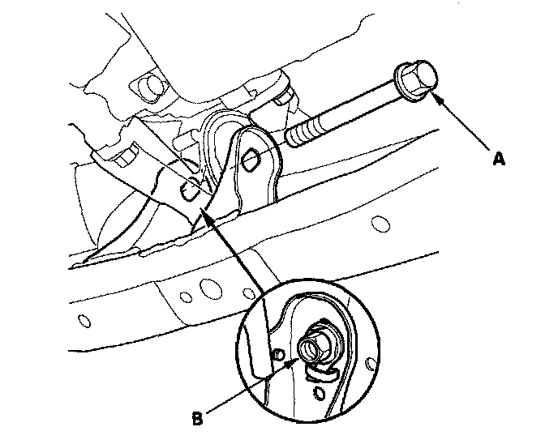
29. Remove the front subframe front mounting bolts (A) from the right and left sides of the vehicle, and discard them.
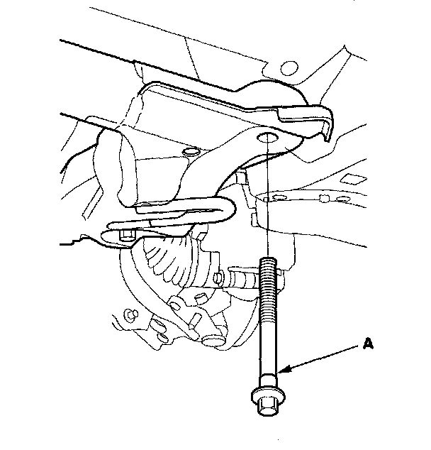
30. Remove the front subframe rear mounting bolts (A) from the right and left sides of the vehicle, and discard them.
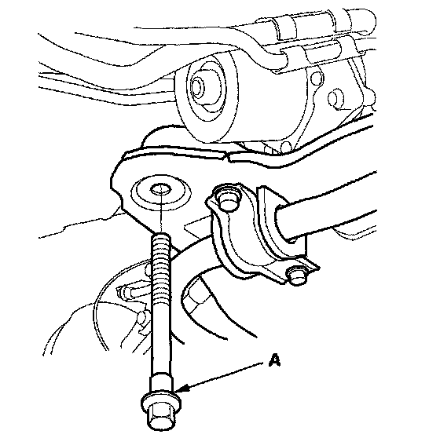
31. Lower the front subframe and steering gearbox as an assembly by lowering the jack slowly.
32. Remove the harness clamp bracket (A) from the front subframe, then remove the harness clips (B).
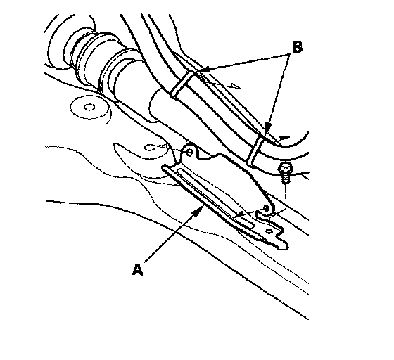
33. Remove the torque sensor 4P connector (A), motor angle sensor 6P connector (B), motor 1P connector (C) and motor 2P connector (D) from the right side of the gearbox mounting bracket (E).
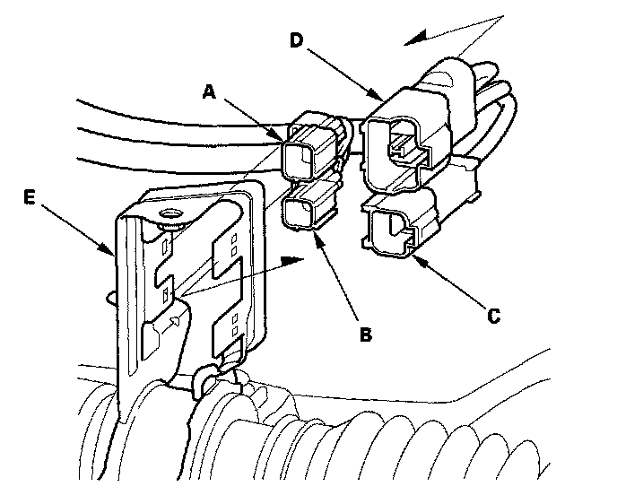
34. Remove the pinion shaft grommet (A) from the top of the torque sensor.
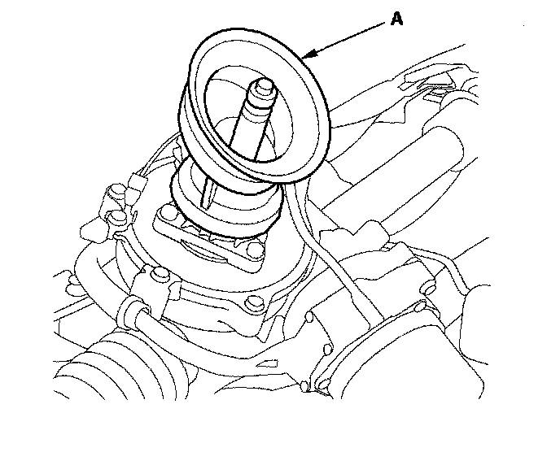
35. Remove the two 10 mm bolts from the right side of the steering gearbox, then remove the gearbox mounting bracket (A) and the mounting cushion (B).
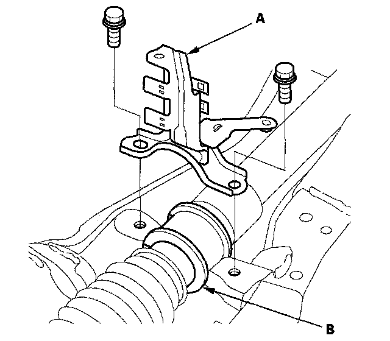
36. Remove the four 10 mm flange bolts from the left side of the steering gearbox, then remove the stiffener plates (A).
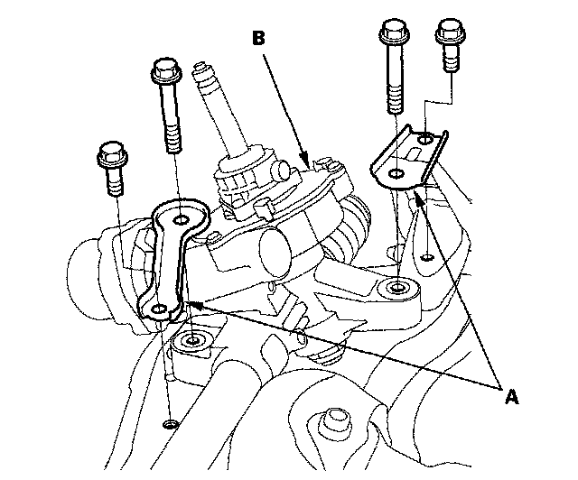
37. Remove the steering gearbox (B) from the front subframe.
Installation
1. Place the steering gearbox in position on the front subframe.
2. Loosely install the stiffener plates (A) and the gearbox mounting bolts on the left side of the steering gearbox.
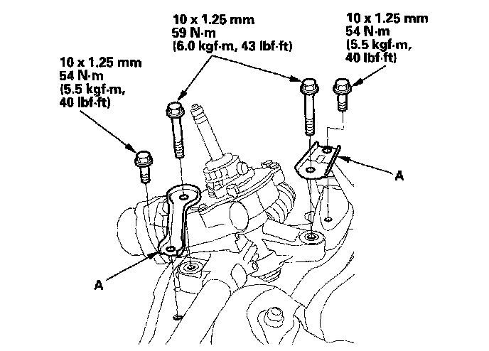
3. Position the cutout (A) on the mounting cushion (B) as shown, and install it on the right side of the steering gearbox securely.
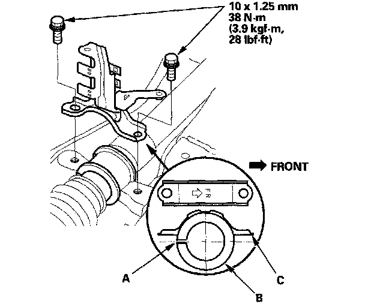
4. Install the gearbox mounting bracket (C) over the mounting cushion, and loosely install the two 10 mm bolts.
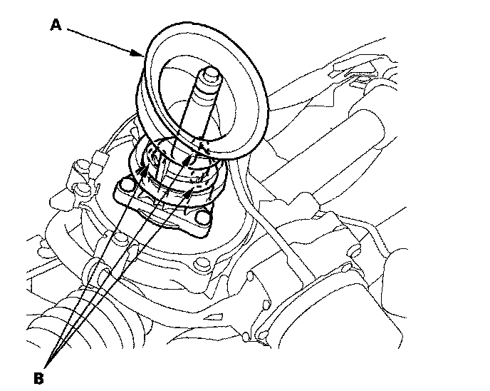
5. Tighten the 10 mm bolts on both sides of the steering gearbox to the specified torque alternately in two or more steps.
6. Install the pinion shaft grommet (A). Align the slot in the pinion shaft grommet with the lug portion (B) on the torque sensor. The grommet must not have a gap at the mating surface of the grommet and the torque sensor.
7. Install the torque sensor 4P connector (A), motor angle sensor 6P connector (B), motor 1P connector (C), and motor 2P connector (D) on the right side of the gearbox mounting bracket (E).
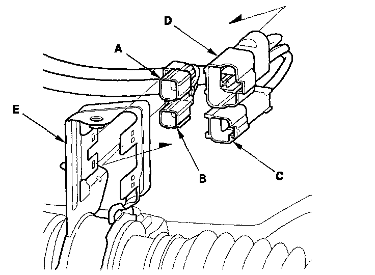
8. Install the harness clips (A) to the harness clamp bracket (B), then install the harness clamp bracket to the front subframe.
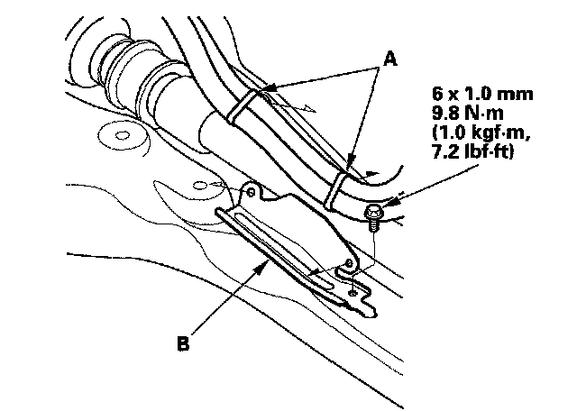
9. Carefully raise the front subframe with the front subframe adapter and the transmission jack or the powertrain lift until the subframe is in position, then loosely install new subframe mounting bolts.
NOTE: Be sure that the pinion shaft grommet is in place securely. Check whether the pinion shaft grommet is not turning up. Incorrect installation can cause leakage of water, mud, and noise.
10. Align the front subframe reference marks (A) to the body (B), as noted during removal.
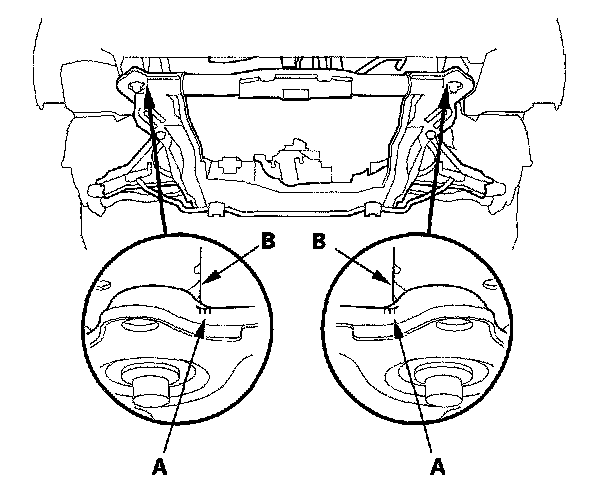
11. Tighten the new front subframe rear mounting bolts (A) to the specified torque.
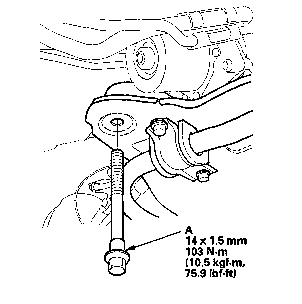
12. Tighten the new front subframe front mounting bolts (A) to the specified torque.
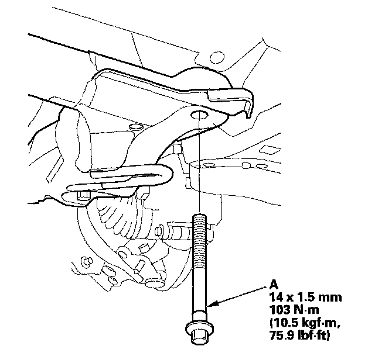
13. Install the new lower engine mounting bolt (A) while holding the nut (B) with a wrench.
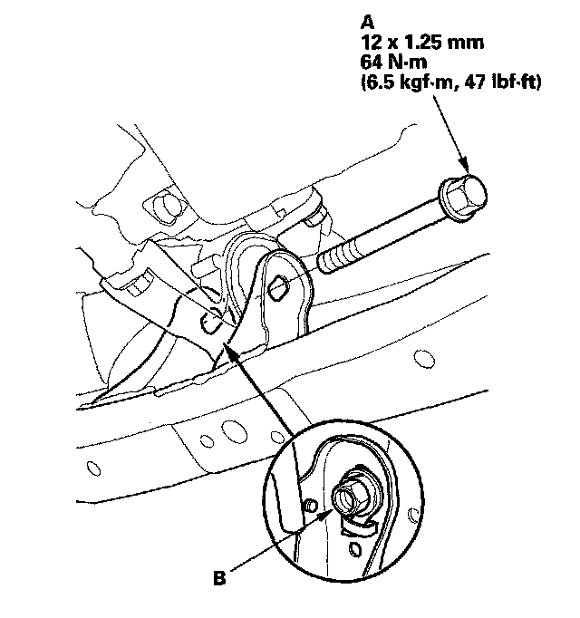
14. Install the lower radiator hose (A) to the radiator hose stay (B).
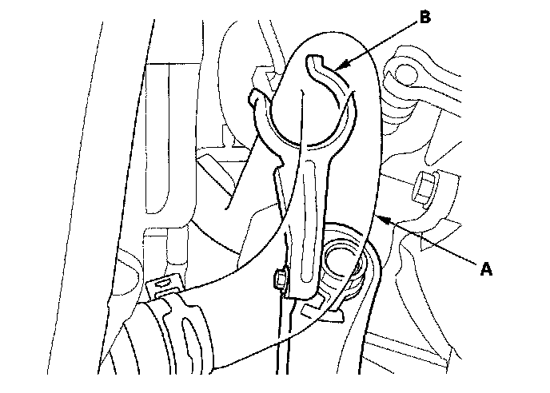
15. Install the new lower torque rod bracket bolt (A) and tighten it to the specified torque.
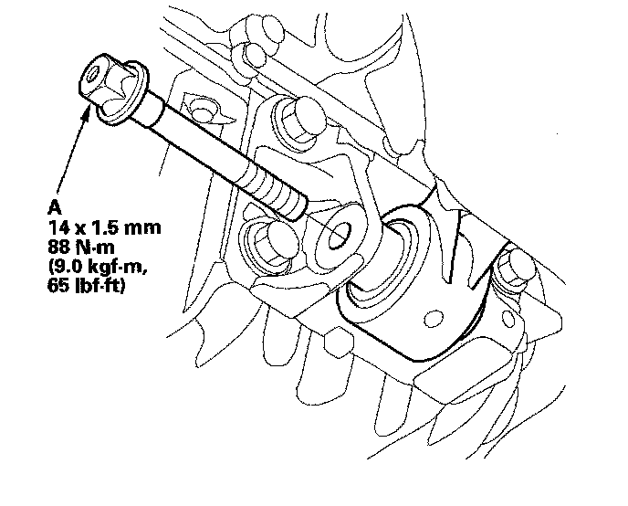
16. Install the new front subframe middle mount bolt (A) on the left side, and tighten it to the specified torque.
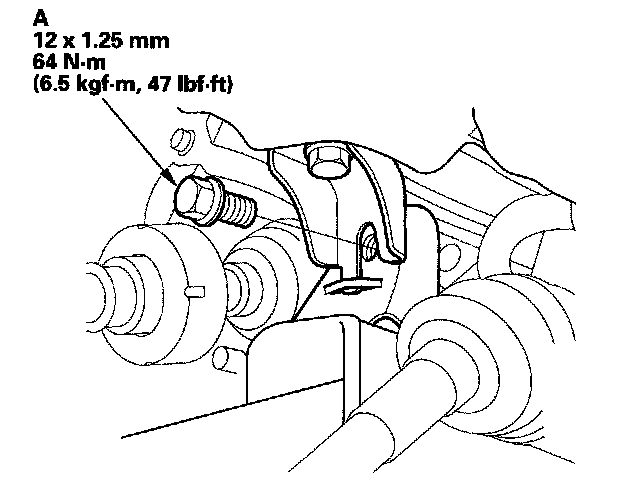
17. Install the new front subframe middle mount bolt (A) on the right side, and tighten it to the specified torque.
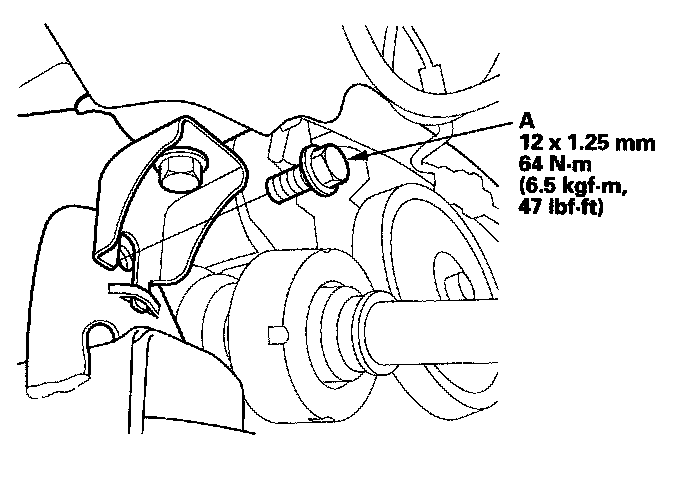
18. Install the exhaust hanger (A) to the three way catalytic converter (TWC) (B).
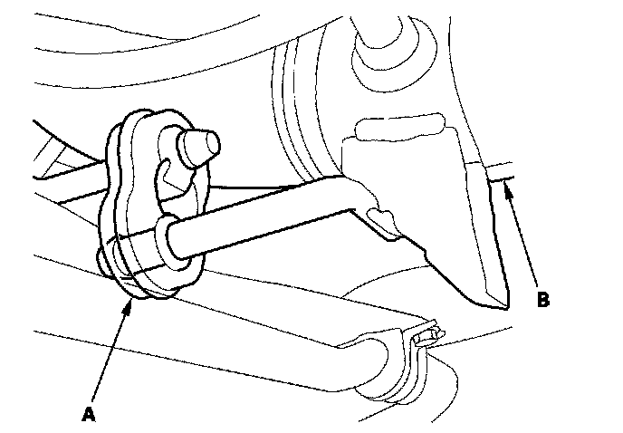
19. Connect the lower arm (A) to the lower ball joint (B).
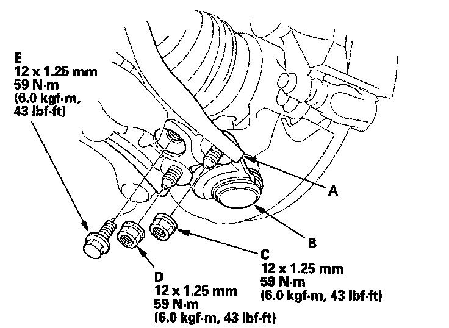
20. Install anew flange bolt and the new flange nuts. After lightly tightening all three fasteners, tighten them to the specified torque in the following order; the flange nut on the front (C), the flange nut on the rear (D), then the flange bolt (E).
21. Remove the vinyl tape, then connect the torque sensor 4P connector (A), motor angle sensor 6P connector (B), motor 1 P connector (C), and motor 2P connector (D) to the steering gearbox. Make sure to push these connectors until you hear a click so that the connectors are secured.
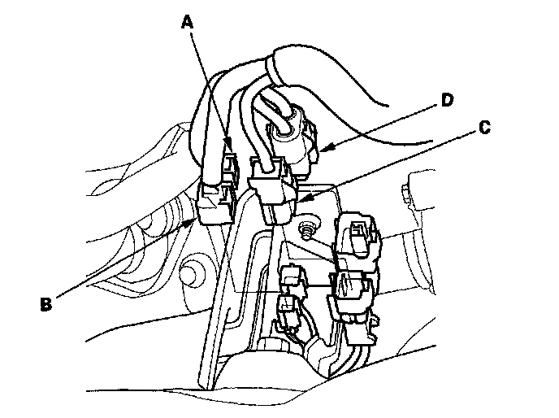
22. Install the front splash shield.
23. Wipe off any grease contamination from the ball joint tapered section and the threads. Reconnect the tie-rod ends (A) to the steering knuckles. Install the 12 mm nut (B), and tighten it.
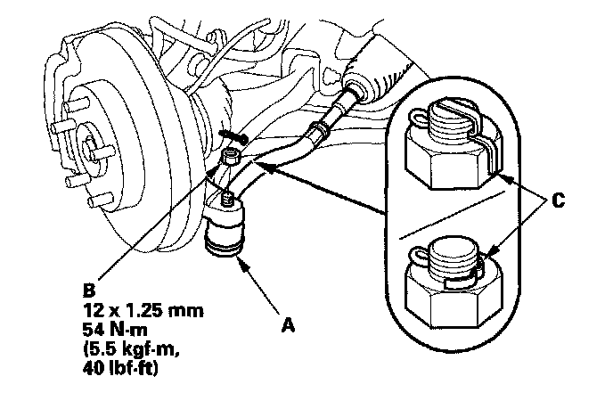
24. Install the new cotter pin (C), and bend it as shown.
25. Center the steering rack within its stroke in the steering joint connection.
26. With the rack in the straight ahead driving position, cut the wire (A) and slip the lower end of the steering joint onto the pinion shaft (B) in the range shown.
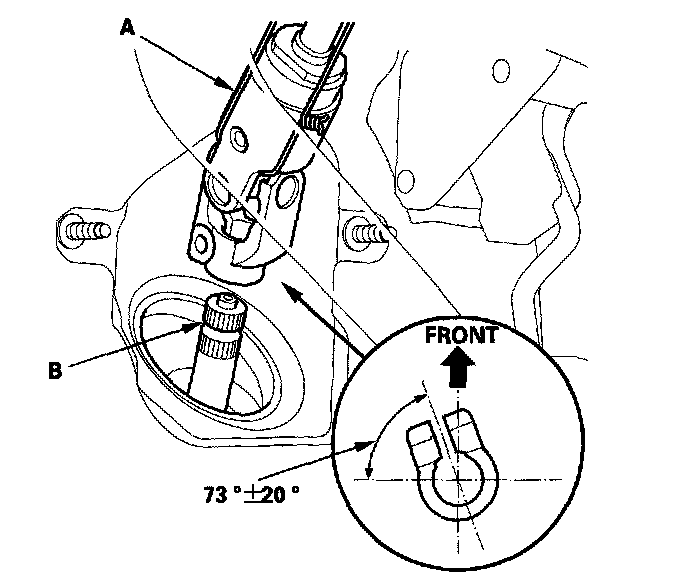
27. Align the bolt hole (A) on the steering joint with the groove (B) around the pinion shaft, and loosely install the joint bolt (C). Be sure that the joint bolt is securely in the groove in the pinion shaft. Pull on the steering joint to make sure that the steering joint is fully seated. Tighten the steering joint bolt to the specified torque.
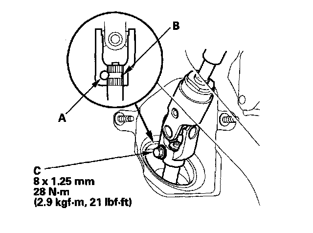
28. Install the steering joint cover (A).
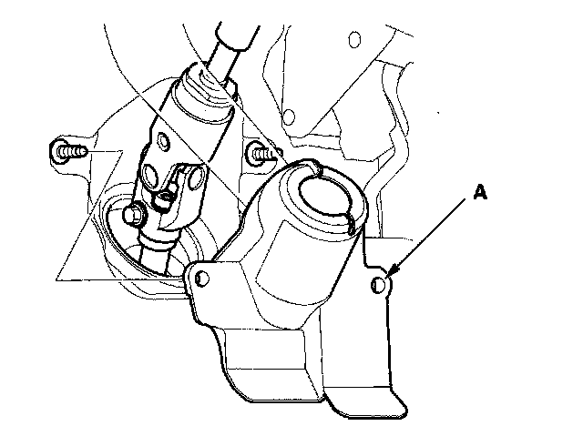
29. Install the driver's dashboard under cover.
30. Install the front wheel, then set the wheels in the straight ahead position.
31. Install the steering wheel.
32. Holding the tires raised off the ground (lifted up), check for the following symptoms by turning the steering wheel fully to the right and left several times.
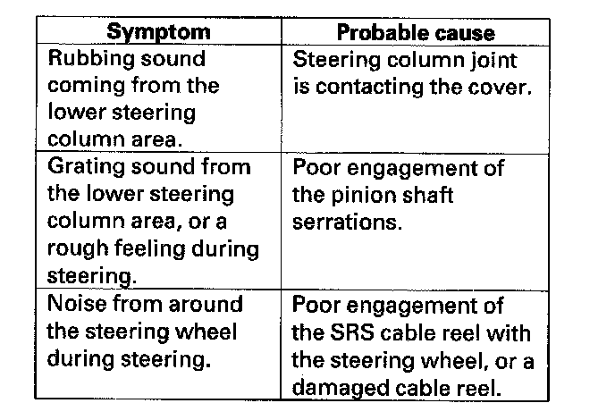
33. Install the air cleaner housing.
34. Install the under cowl panel.
35. Reconnect the negative cable to the battery and do these items:
^ Turn the ignition switch ON (II); the SRS indicator should come on for about 6 seconds and then go off.
^ Enter the anti-theft code for the audio or navigation system, then enter the audio presets,
^ Set the clock.
^ Make sure the horn and turn signal switch work properly.
^ Make sure the steering wheel switches work properly.
^ Make sure the steering wheel is centered.
^ Do the memorizing the torque sensor neutral position.
36. After installation, do the following checks:
^ Start the engine, and let it idle. Turn the steering wheel from lock-to-lock several times.
^ Check that the EPS indicator does not come on.
^ Check the steering wheel spoke angle. If steering spoke angles to the right and left are not equal (steering wheel and rack are not centered), correct the engagement of the joint/pinion shaft serrations, then adjust the front toe by turning the tie-rod ends, if necessary. Check the front toe inspection.